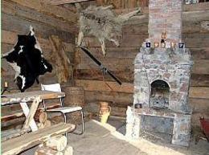
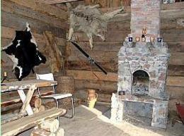

Oferta
tel. +48(58) 681 22 02 lub +48 502 039 045
MAMY KONTAKT Z FIRMĄ ORGANIZUJĄCĄ PRZELOTY SZYBOWCEM NAD KASZUBAMI!!


 



JAK MOŻNA U NAS MIESZKAĆ ?
* W domu całorocznym z pełnym wyposażeniem;* W niezależnych mieszkaniach z kuchnią i łazienką;
* Pod własnym namiotem, we własnej przyczepie;
* W stodole na sianie.
ATRAKCJE RÓŻNE NA MIEJSCU
* Jazda konna, przejażdżki bryczką,wozem drabiniastym, w zimie KULIGI.
* Spływy kajakowe na Raduni
* Jezioro 300m, Jar Raduni 1km.
* Wędkowanie.
* Sauna, grill, ognisko, chata z kominkiem.
* Mini skansen narzędzi rolniczych.
* Plac zabaw dla dzieci, małe ZOO.
REGULAMIN POBYTU
* Zaliczka na poczet pobytu w wysokości 30%płatna niezwłocznie po dokonaniu rezerwacji.
* Doba rozpoczyna się o godzinie 14.00,
a kończy o godzinie 12.00 dnia następnego.
* Opłata za pobyt pobierana jest w całości
w dniu przyjazdu do Gospodarstwa.
* W przypadku wcześniejszego wyjazdu
nie zwracamy niewykorzystanej opłaty za pobyt.
PRZYJAZD Z PSEM
* należy uzgodnić podczas dokonywania rezerwacji.ATRAKCJE TURYSTYCZNE REGIONU
BLIŻSZE :
* Kiełpino - zabytkowy kościół, pociąg retro Costerina,
szlak turystyczny, w pobliżu kurhany Gotów
* Kartuzy - Muzeum Kaszubskie, klasztor i kolegiata,
park, zabytkowe kamieniczki
* Łapalice - zamek w budowie
* Rutki - zabytkowa elektrownia wodna i most
* Żukowo - pozostałości klasztoru Norbertanek, młyn wodny
* Kościerzyna- muzeum lokomotyw, muzeum regionalne
* Będomin - Muzeum Hymnu Narodowego
* Wdzydze Kiszewskie - skansen, Kaszubski Park Etnograficzny
* Chmielno - Muzeum Ceramiki Kaszubskiej
* Wieżyca - najwyższy szczyt Pomorza, wieża widokowa
* Ostrzyce - wypożyczalnia sprzętu wodnego
* Szymbark - dom do góry nogami, najdłuższa deska świata
DALSZE :
* Łeba - Słowiński Park Narodowy, ruchome wydmy
* Bytów - zamek krzyżacki, muzeum
* Gniew - zamek krzyżacki, turnieje rycerskie, biesiady
* Malbork - największy zamek krzyżacki, muzeum,
* Trójmiasto - zabytki Gdańska, molo w Sopocie,
oceanarium w Gdyni i inne atrakcje
CENNIK:
* 1 doba - 45 złotych/osoba* dłuższy pobyt - 40 złotych/osobodoba
* dziecko do 10 lat - 20 złotych/doba
JAK NAS ZNALEŹĆ?
POBIERZ PROGRAM WYCIECZKI dla przedszkolaków lub dzieci z klas młodszych szkoły podstawowe
OPINIE ORAZ KSIĘGA GOŚCI